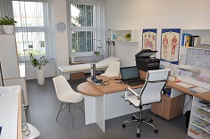
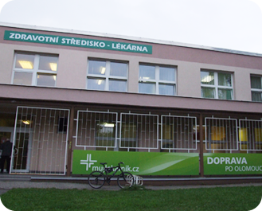

Ordinace praktického lékaře pro dospělé MUDr. Eva Dunajská v Olomouci - Lazcích – komplexní léčebná a preventivní péče, okamžitá diagnostika (CRP, INR, EKG, Holter, ABI), online objednání eReceptů a pracovnělékařské služby pro firmy


Veškeré autentické informace, historie, provozní údaje a identifikační data naší společnosti.
Vítejte na stránkách Praktikcentrum s.r.o. – ordinace praktického lékaře pro dospělé MUDr. Evy Dunajské. Naše ordinace sídlí v 1. patře budovy Zdravotního střediska Lazce na ulici Dlouhá 521/34 v Olomouci - Lazcích (výborná dostupnost MHD: zastávka *Na Letné* BUS č. 14, *Klášterní Hradisko* BUS č. 15, 20, 21 a *Finanční úřad* BUS č. 17, 21, 22).
Poskytujeme komplexní diagnostickou, léčebnou a preventivní péči v oboru všeobecné praktické lékařství pro dospělé. Ordinace je vybavena špičkovými přístroji přímo na místě: analyzátorem CRP QuikRead (okamžité odlišení bakteriální a virové infekce z kapky krve), přístrojem Coagu-Chek (měření srážlivosti krve INR na počkání), 12svodovým EKG, 24hodinovým tlakovým Holterem a přístrojem ABI pro bezbolestné měření průchodnosti tepen dolních končetin (záchyt ICHDK).
Pro registrované pacienty umožňujeme online objednání eReceptů na chronicky užívané léky. Současně zajišťujeme kompletní pracovnělékařské služby (závodní péči) pro firmy a instituce ve vyhrazených hodinách (Úterý a Čtvrtek 12:00–14:00, kontaktní osoba pro firmy Mgr. Tomáš Hégr, tel. 603 851 231).
| Poskytovatel zdravotních služeb | Praktikcentrum s.r.o. – MUDr. Eva Dunajská |
| Adresa ordinace | Dlouhá 521/34, 779 00 Olomouc - Lazce (1. patro) |
| IČO | 29451759 |
| Telefon do ordinace | +420 585 226 238 | E-mail: praktikcentrum@seznam.cz |
| Kontakt pro firemní klienty (PLS) | Mgr. Tomáš Hégr – tel.: +420 603 851 231 |
| Smluvní zdravotní pojišťovny | 111 VZP ČR | 201 VoZP | 205 ČPZP | 207 OZP | 211 ZP MV ČR | 213 RBP |
Každý všední den od 7:00 do 8:00 hod. provádíme v ordinaci odběry krve, moči a stěrů.
Pacienti s náhlým akutním onemocněním jsou ošetřováni přednostně v ranním bloku 7:00–9:00 hod.
Pro objednání na konkrétní termín a dotazy na výsledky volejte prosím na tel. 585 226 238 mezi 10:00 a 12:00 hod.
Objednání trvale užívaných léků až na 3 měsíce prostřednictvím online formuláře (vzor: Pantoprazol 20 mg 1-0-0).
Kompletní rozpis všech kategorií, materiálů, technologií a služeb podle našeho katalogu.
Veškerá klíčová vyšetření provádíme přímo v нашей ordinaci během několika minut bez nutnosti odesílat pacienta na vzdálená pracoviště.
Registrovaní pacienti si mohou o zaslání SMS eReceptu na trvale užívané léky požádat přímo přes formulář na tomto webu.
Zajišťujeme kompletní závodní preventivní péči pro zaměstnavatele všech kategorií rizika. Vyhrazené ordinační hodiny pro PLS: Úterý a Čtvrtek 12:00 – 14:00 hod.
Pravidelné dvouleté preventivní prohlídky hrazené pojišťovnou, onkologický screening, povinná i volitelná očkování a administrativní úkony.
Přehledně zpracované kompletní tabulky, ceníky, technické specifikace a referenční zakázky.
Odběry krve: 7:00–8:00 | Akutní pacienti bez objednání: 7:00–9:00 | Telefonické objednání (585 226 238): 10:00–12:00 hod.
| Den v týdnu | Dopolední ordinace | Odpolední ordinace / PLS | Rozpis činností |
|---|---|---|---|
| Pondělí | 7:00 – 12:00 hod. | 13:00 – 18:00 hod. | 7:00–8:00 odběry, 7:00–9:00 akutní, odpoledne pro objednané pacienty |
| Úterý | 7:00 – 12:00 hod. | 12:00 – 14:00 hod. (PLS) | 7:00–9:00 akutní, 9:00–12:00 objednaní | 12:00–14:00 Pracovnělékařské služby |
| Středa | 7:00 – 13:00 hod. | — | 7:00–8:00 odběry, 7:00–9:00 akutní, 9:00–13:00 objednaní a prevence |
| Čtvrtek | 7:00 – 12:00 hod. | 12:00 – 14:00 hod. (PLS) | 7:00–9:00 akutní, 9:00–12:00 objednaní | 12:00–14:00 Pracovnělékařské služby |
| Pátek | 7:00 – 12:00 hod. | — | 7:00–8:00 odběry, 7:00–9:00 akutní, 9:00–12:00 objednaní pacienti |
Kompletní ceník administrativních a posudkových výkonů na vlastní žádost pacienta a ceník pracovnělékařských služeb pro firmy.
| Název lékařského výkonu / Posudku | Cena | Kategorie / Poznámka |
|---|---|---|
| Výpis ze zdravotnické dokumentace (na žádost pacienta) | 250 Kč | Pro soukromé účely, komerční pojišťovny či pracovnělékařské prohlídky jinde |
| Posudek o zdravotní způsobilosti k řízení motorových vozidel (Řidičský průkaz) | 400 Kč | Vstupní vyšetření žadatelů o ŘP i pravidelné prohlídky seniorů |
| Posudek o zdravotní způsobilosti pro Zbrojní průkaz | 500 Kč | Komplexní posouzení způsobilosti k držení zbraně a střeliva |
| Vystavení zdravotního průkazu (Potravinářský průkaz) | 200 Kč | Pro pracovníky v potravinářství, gastronomii a službách |
| Potvrzení přihlášky ke studiu (SŠ / VŠ) nebo na zotavovací akci | 150 Kč | Posouzení zdravotní způsobilosti ke studiu či rekreačnímu pobytu |
| Aplikace očkovací látky nehrazené z veřejného zdravotního pojištění | 150 Kč | Cena za výkon aplikace (plus cena samotné vakcíny dle nákupu) |
| Vyšetření pro komerční pojišťovnu (bolestné, trvalé následky, pojistka) | 300 – 500 Kč | Dle rozsahu formuláře komerční pojišťovny |
| PLS: Vstupní / periodická / mimořádná / výstupní prohlídka zaměstnance | 600 Kč (bez DPH) | Smluvní pracovnělékařská prohlídka pro zaměstnavatele |
| PLS: Pravidelná dohlídka na pracovišti a odborné poradenství | 2 000 Kč / hod. | Kontrola pracovních podmínek ve firmě a dokumentace BOZP |
| PLS: Odborné školení první pomoci pro zaměstnance + Doprava | 2 000 Kč / hod. + 15 Kč/km | Kontakt pro uzavření smlouvy PLS: Mgr. Tomáš Hégr (+420 603 851 231) |
Prohlédněte si kompletní databázi našich autentických fotografií rozdělenou do přehledných kategorií. Kliknutím na libovolný snímek otevřete detailní náhled na celou obrazovku.
Neváhejte nám zavolat, napsat e-mail nebo nás osobně navštívit na uvedené adrese.
Dlouhá 521/34, 779 00 Olomouc - Lazce (Zdravotní středisko Lazce, 1. patro)
Po: 7–12, 13–18 | Út: 7–12 (PLS 12–14) | St: 7–13 | Čt: 7–12 (PLS 12–14) | Pá: 7–12
IČO: 29451759 | Doména: praktikcentrum.cz
Vyplňte krátký formulář níže – ozveme se vám zpět v nejbližším možném termínu.